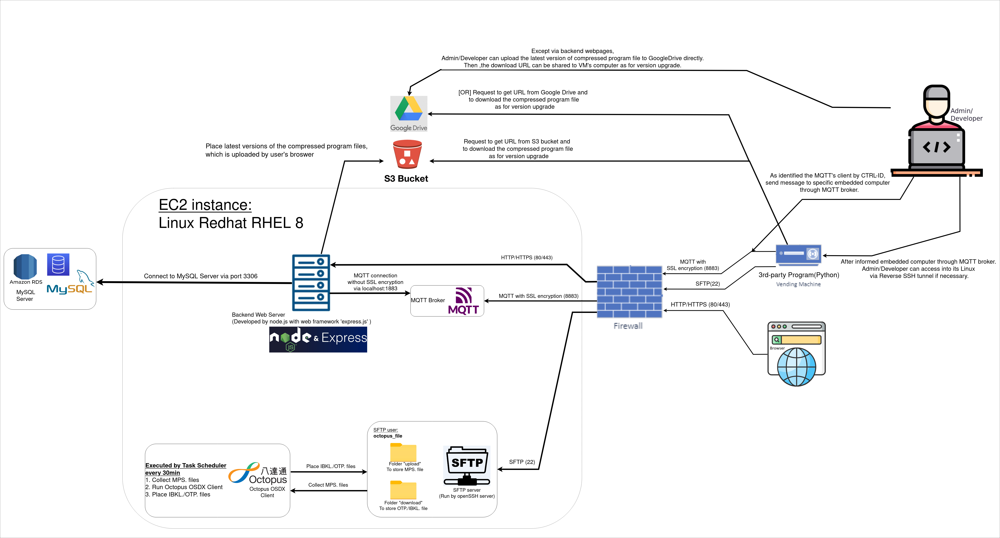
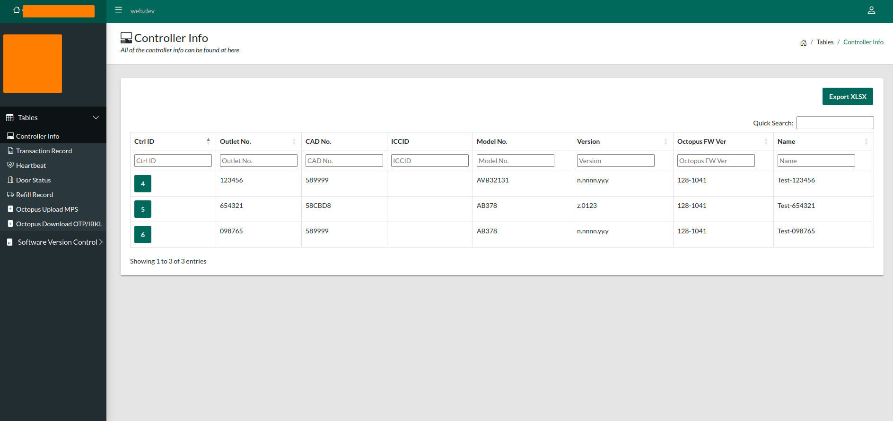

Based on an old existing vending program, stop to use its old backend server in an old platform(VMware).
Re-developed a new 3rd-party program(Python), which is arranged to run with the existing vending program parallelly as background services in the same vending machine's embedded computer.
The major purpose is to keep monitoring the real-time log records from the old vending program’s log file in the same embedded computer(Linux) and forward those real time records’ data(e.g Transaction records, machine status) to a new backend server platform(AWS cloud).
Infrastructure Diagram:
Backend Admin Webpages:
